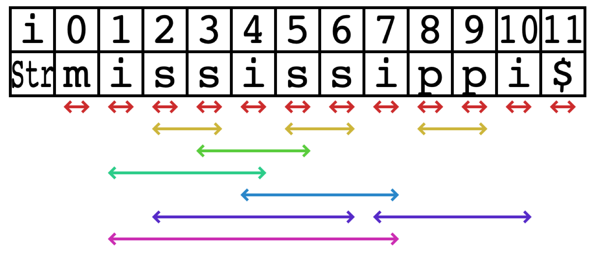
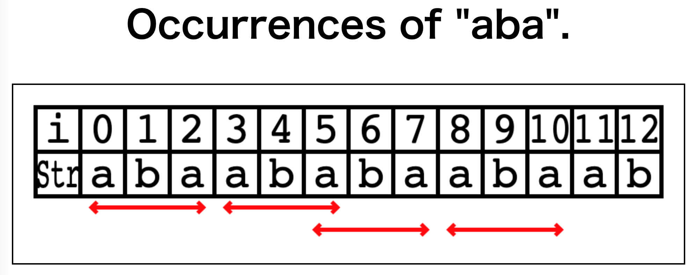

visstr

VisStr
VisStr is a library to visualize a string and its properties such as repetitions, occurrences, and redundancies.
The following image visualizes all palindromes that occurs as substrings in "mississippi$".

See demos and API documents.
Compile
Run the following commands.
$ git clone https://github.com/kg86/visstr.git
$ cd visstr
$ npm install
$ npm run build
Libraries are output in ./lib (UMD/CommonJS) and demo assets in ./dist.
Examples: Visualizing the substring occurrences
This is an example to visualize all the occurrences of aba in abaababaabaab using VisStr.
- Add
<canvas>element to the HTML which is a core of the visualizer.
<canvas id="canvas" width="1000" height="240" style="border:1px solid #000000;">
</canvas>
- Load the VisStr library
../lib/vis_str.umd.js. Note that we have to use umd version for browser.
<script type="text/javascript" src="../lib/vis_str.umd.js"></script>
- Create a string and a range list representing the occurrences of
aba, and specify the style of the range list (e.g., arrow, line, curve) and the color.
const { VisStr } = window.visstr;
const canvas = document.querySelector("#canvas");
// create visstr object.
const vstr = new VisStr(canvas);
// input string
const s = "abaababaabaab";
// create occurrences of aba.
const occAba = [
[0, 2],
[3, 5],
[5, 7],
[8, 10],
];
// add line style and color.
const ranges = vstr.makeRanges(occAba, "arrow", "#ff0000");
// make group so that they are not overlap with each others.
const grouped = vstr.nonOverlapRanges(ranges);
vstr.draw(s, grouped);
The result is visualized as follows:

You can find the source code, and the demo page.